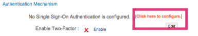
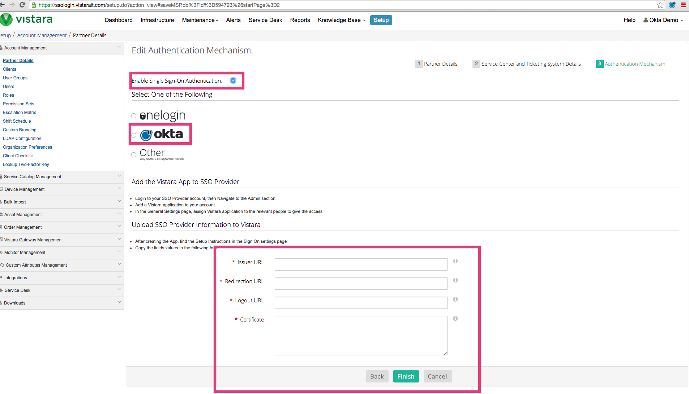

Select Setup on the top menu, as shown below.
In the Authentication Mechanism section, select Click here to configure, as shown below.

X.509 Certificate – Copy and paste the following Certificate. Be sure to include the Begin Certificate and End Certificate lines.
Sign into the Okta Admin Dashboard to generate this variable.

Note: Only SP-initiated flows are supported. To use an SP-initiated flow, navigate to https://[yourSubdomain].vistarait.com, where [yourSubdomain] is the Vistara subdomain for your organization. IdP-initiated flows and Just In Time (JIT) provisioning are not supported.